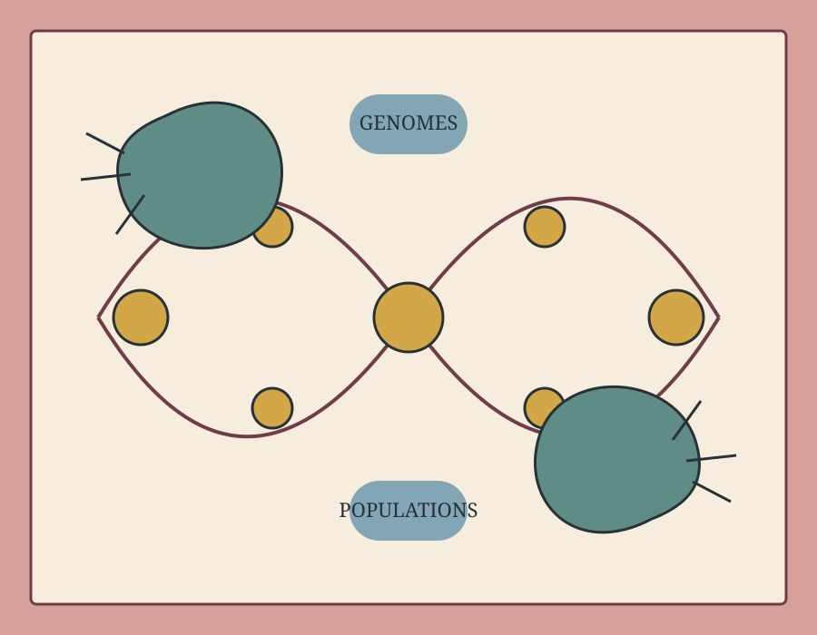
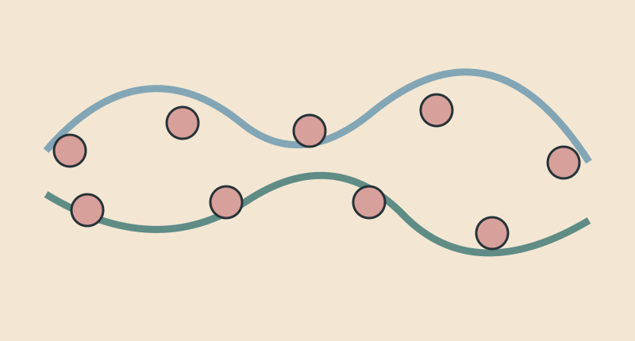

Pathogen genomics where the data gaps are largest
Building locally grounded genomic epidemiology with collaborators across Africa, South America and Asia.
Ben Pascoe · Global pathogen genomics & evolution
We combine population genomics, epidemiology and machine learning to understand bacterial transmission, antimicrobial resistance and disease across human, animal and environmental systems.

Research programme
Our work asks how bacterial lineages emerge, adapt, cross ecological boundaries and contribute to human disease—especially in settings that remain under-represented in global genomic datasets.
Building locally grounded genomic epidemiology with collaborators across Africa, South America and Asia.
Following mutations, recombination, mobile elements and ecological selection through bacterial populations.
Using genomes and source-attribution models to identify transmission routes that matter for intervention.
Linking genotype, ecology, carriage, persistence and clinical outcomes at population scale.
Flagship projects

Linking childhood infection to household, animal, food and environmental reservoirs through coordinated sampling and genomics.
Project overview →
Turning pathogen genomes, source attribution and intervention modelling into practical routes for prevention.
Project overview →
Metagenomic investigation of microbial communities and resistance across migratory birds, poultry and human-influenced environments.
Project overview →Field to laboratory
Sampling design, laboratory methods, analysis and interpretation are developed with local partners—not exported as a finished package.


Selected outputs
The full publication list remains available one level deeper, while this page foregrounds papers that best explain the programme.
Metrics reproduced from the previous site as a dated snapshot; live profiles are linked on the publications page.
Journal of Infection · 2024
National genomic surveillance used to estimate the relative contributions of poultry, cattle and other reservoirs.
Stories
Longer-form explanations, project notes and archived social-media threads make the work accessible beyond the abstract.

How 25,000+ genomes and machine learning were used to map the likely origins of US infections.
Read story →
Why children, households, animals, food and water need to be studied together.
Read field note →What urban-adapted birds reveal about human influence on microbial ecology and AMR.
Read story →Global network
Explore project hubs, study settings, training links and long-term research relationships across the UK, Africa, South America and Asia.
Open the collaborator map
People & supervision
Supervision is organised around intellectual independence, reproducible analysis, equitable collaboration and a clear path from biological question to publishable work.
Supervision and opportunities